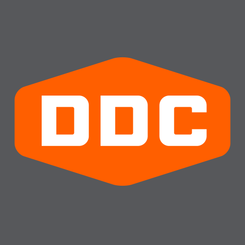
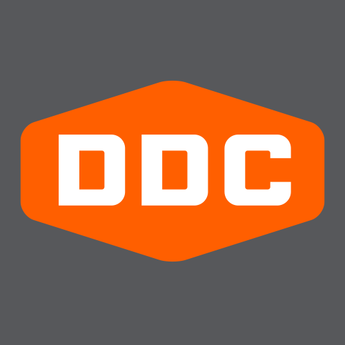

Aaron Draplin
About
Aaron James Draplin was born on October 15th, 1973 in Detroit, Michigan to parents Jim and Lauren Draplin. As a kid he grew up “on a steady stream of Lego, Star Wars, family trips, little sisters, summer beach fun, stitches, fall foliage, drawing, skateboarding and snowboarding”. When he was 17, he started his Associate Degree at Northwestern Michigan College and he graduated in 1993. At age 19, he moved away to Bend, Oregon to pursue a career in graphic design. His career started with a snowboard graphic for Solid snowboards and his career started fast soon after. Everything from thinking up local advertising campaigns, lettering cafe signs, to drawing up logos were made under the newly formed Draplindustries Design Co. After 5 years he moved to Minneapolis to finish his design degree at Minneapolis College of Art and Design and graduated in December 2000. Earlier that year in April, he accepted a position as an art director at SNOWBOARDER magazine. In April 2002, he was offered the Senior Designer position at Cinco Design Office of Portland, Oregon. In 2004, Draplin Design Co was born. Aaron has been the Sole Proprietor since then. Since February 2008 he has also has been partnering with John Phemister and David Nakamoto for the company, Wilderness.
 
